Destins, programes i requisits
Terminis, sol·licitud i beques
Acord d'estudis, matrícula i visat
Primers passos, canvis i reconeixement
| OMA (Oficina de Mobilitat i Acollida) Convocatòria i resolució places mobilitat, beques, requisits idiomes, Erasmus pràctiques |
Consultes via CAU T. +34 935 422 411 (dilluns a dimecres, 10.00–12.00 h) |
| Coordinador de mobilitat, Alfonso Martínez Assessorament acadèmic: reconeixements, contingut d'assignatures, qualificacions |
coord-mobilitat.enginyeria@upf.edu Campus Poblenou, despatx 55.204 T. +34 935 422 922 |
| Secretaria de l'Escola d'Enginyeria Matrícula d'assignatures, recepció i incorporació de notes a l'expedient |
mobilitat.enginyeria@upf.edu o CAU Campus Poblenou, despatx 55.014 T. +34 935 422 667 |